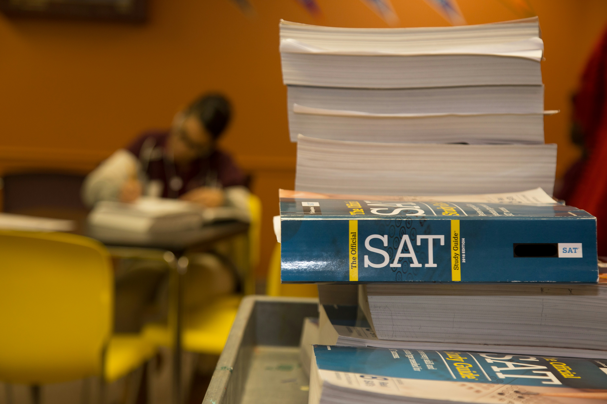

취미
3. 영어공부
: 솔직히 말하자면, 영어 공부는 취미라기보다 취미로라도 삼고 싶은 거랄까?!
요즘 같은 세계화 시대에 영어는 선택이 아니라 필수가 아닐까 싶습니다
제가 나름 영어를 친숙하게 하기 위한 방법 아닌 방법을 소개해 드리겠습니다
- 1. 영어 라디오 즐겨 듣기 ex, ebs 반디
- 2. OTT 매체를 통해 미드 즐겨보기
- 3. '스픽' 어플 활용해서 스피킹 연습하기 -> 뒷광고X / 내돈내산 입니다
- 4. 어학 자격증 시험 꾸준히 보기
- 5. 교재 국제프로그램 활용하기 ex, 글로벌 빌리지, 교환학생, 교비 어학연수 등등
이 방법은 좀 유용하겠네!? 싶으신 것이 있다면, 한 번 실천에 옮겨보시면 좋을 것 같습니다!
